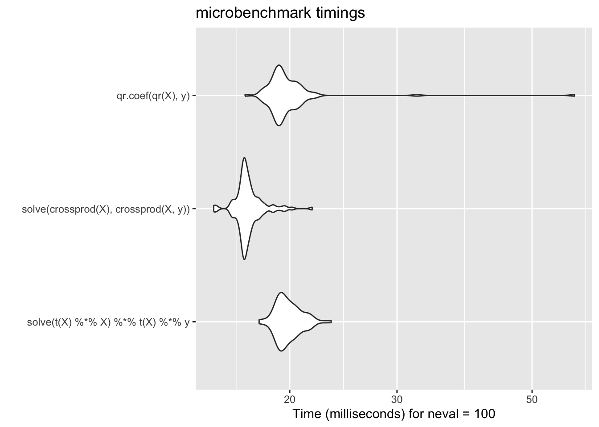
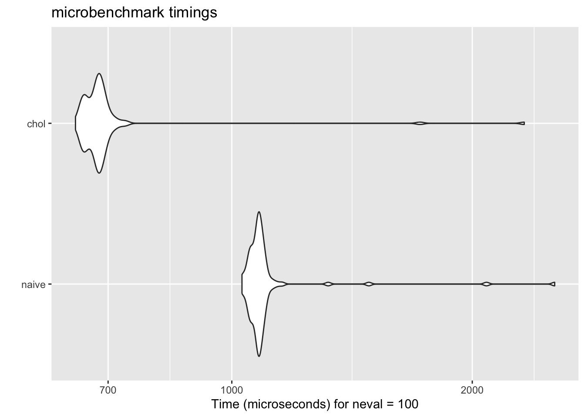

A <- matrix(
c(1, 2, 3,
4, 5, 6,
7, 8, 9),
nrow = 3, ncol = 3, byrow = TRUE)
B <- A
B[3, 3] <- B[3, 3] + 1E-5
qr(A)$rank[1] 2qr(B)$rank[1] 3The optimization plays an important role in statistical computing, especially in the context of maximum likelihood estimation (MLE) and other statistical inference methods. This chapter will cover various optimization techniques used in statistical computing.
There is a general principle that will be repeated in this chapter that Kenneth Lange calls optimization transfer in his 1999 paper. The basic idea applies to the problem of maximizing a function \(f\).
Note 1: steps 2&3 are repeated until convergence.
Note 2: maximizing \(f\) is equivalent to minimizing \(-f\).
Note 3: the surrogate function \(g\) should be chosen such that it is easier to optimize than \(f\).
For instance, for a linear regression \[\begin{equation} y = X\boldsymbol{\beta} + \varepsilon. \label{eq:linmod} \end{equation}\]
From regression class, we know that the (ordinary) least-squares estimation (OLE) for \(\boldsymbol{\beta}\) is given by \(\hat{\boldsymbol{\beta}}=(X^\top X)^{-1} X^\top y\). It is convenient as the solution is in the closed-form! However, in the most case, the closed-form solutions will not be available.
For GLMs or non-linear regression, we need to do this iterativelly!
One confusing aspect of statistical computing is that often there is a disconnect between what is printed in a statistical computing textbook and what should be implemented on the computer.
Some potential issues includ:
Memory overflow: The computer has a limited amount of memory, and it is possible to run out of memory when working with large datasets or complex models.
Numerical Precision: Sometimes, due to the cut precision of floating-point arithmetic, calculations that are mathematically equivalent can yield different results on a computer.
(Lienar) Dependence: The detection of linear dependence in matrix computations is influenced by machine precision. Since computers operate with finite precision, situations often arise where true linear dependence exists, but the computer cannot distinguish it from independence.
In many statistical analyses, such as linear regression and specify the distribution (such as normal distribution), matrix inversion plays a central role.
We know that, a normal density with the parameters mean \(\mu\) and standard deviation \(\sigma\) is \[ f\left(x \mid \mu, \sigma^2\right)=\frac{1}{\sqrt{2 \pi} \sigma} \exp\left\{-\frac{1}{2 \sigma^2}(x-\mu)^2\right\} \] or we may work on the multivariate normal distribution case which is a bit more involved.
\(\boldsymbol{X} = (X_1,\dots, X_d)\) is said to be a multivariate normal distribution if and only if it is a linear comibnation of independent and identically distributed standard normals: \[ \boldsymbol{X} = \boldsymbol{CZ} + \mu,\quad \boldsymbol{Z}=(Z_1,\dots,Z_d),\quad Z_i \stackrel{iid}{\sim} N(0,1). \]
The property of the multivariate normal are:
Notation: \(\boldsymbol{X} \sim N(\mu, \boldsymbol{\Sigma})\).
PDF: \[ f(\boldsymbol{x} \mid \mu, \Sigma)=(2 \pi)^{-d / 2} \cdot \exp \left\{-\frac{1}{2}(\boldsymbol{x}-\boldsymbol{\mu})^{\prime} \boldsymbol{\Sigma}^{-1}(\boldsymbol{x}-\boldsymbol{\mu})-\frac{1}{2} \log |\boldsymbol{\Sigma}|\right\}. \] Some of the potential ways to do this is to take logarithm of the PDF (Think about why).
Recall the linear regression model . The OLE for \(\boldsymbol{\beta}\) is given by \(\hat{\boldsymbol{\beta}}=(X^\top X)^{-1} X^\top y\).
We can solve this using the R command
where solve() is the R function for matrix inversion. However, it is not a desired way (think about why).
A better way is to go back to the formula, and look at \[ X^\top X\boldsymbol{\beta}= X^\top y, \] and solve this using the R command
Here, we avoid explicitly calculating the inverse of \(X^\top X\). Instead, we use gaussian elimination to solve the system of equations, which is generally more numerically stable and efficient.
Unit: milliseconds
expr min lq
solve(t(X) %*% X) %*% t(X) %*% y 28.83505 30.16593
mean median uq max neval
31.96782 30.79489 32.63315 111.0151 100
Warning message:
In microbenchmark(solve(t(X) %*% X) %*% t(X) %*% y) :
less accurate nanosecond times to avoid potential integer overflowsUnit: milliseconds
expr min lq
solve(t(X) %*% X) %*% t(X) %*% y 28.90135 30.11608
solve(crossprod(X), crossprod(X, y)) 25.05859 25.27480
mean median uq max neval
31.78686 31.38513 32.66482 53.03354 100
26.15771 25.81678 26.89188 29.12045 100The take home here is that the issues arise from the finite precision of computer arithmetic and the limited memory available on computers. When implementing statistical methods on a computer, it is crucial to consider these limitations and choose algorithms and implementations that are robust to numerical issues.
The above approach may break down when there is any multi-colinearity in the \(\boldsymbol{X}\) matrix. For example, we can tack on a column to \(\boldsymbol{X}\) that is very similar (but not identical) to the first column of \(\boldsymbol{X}\).
The algorithm does not work because the cross product matrix \(W^\top W\) is singular. In practice, matrices like these can come up a lot in data analysis and it would be useful to have a way to deal with it automatically.
R takes a different approach to solving for the unknown coefficients in a linear model. R uses the QR decomposition, which is not as fast, but has the added benefit of being able to automatically detect and handle colinear columns in the matrix.
Here, we use the fact that X can be decomposed as \(\boldsymbol{X}=QR\), where \(Q\) is an orthonormal matrix and \(R\) is an upper triangular matrix. Given that, we can rewrite \(X^\top X \boldsymbol{\beta}= X^\top y\) as \[\begin{align*} R^\top Q^\top Q R \boldsymbol{\beta}&= R^\top Q^\top y\\ R^\top I R \boldsymbol{\beta}&= R^\top Q^\top y\\ R^\top R \boldsymbol{\beta}&= R^\top Q^\top y, \end{align*}\] this leads to \(R\boldsymbol{\beta}= Q^\top y\). Now we can perform the Gaussian elimination to do it. Because \(R\) is an upper triangular matrix, the computational speed is much faster. Here, we avoid to compute the cross product \(X^\top X\), which is numerical unstable if it is not standardized properly
We can see in R code that even with our singular matrix \(W\) above, the QR decomposition continues without error.
List of 4
$ qr : num [1:3000, 1:101] 54.43933 0.00123 -0.02004 -0.00671 -0.00178 ...
$ rank : int 100
$ qraux: num [1:101] 1.01 1.01 1.01 1 1 ...
$ pivot: int [1:101] 1 2 3 4 5 6 7 8 9 10 ...
- attr(*, "class")= chr "qr"Note that the output of qr() computes the rank of \(W\) to be 100, not 101 as the last column is collinear to the 1st column. From there, we can get \(\hat{\boldsymbol{\beta}}\) if we want using qr.coef(),
[1] 0.024314718 0.000916951 -0.005980588[1] 0.01545039 -0.01010440 NAQ: Why there is an NA?
There isn’t always elegance and flourish. When we take the robust approach, we accept that it comes at a cost.
Warning in microbenchmark(solve(t(X) %*% X) %*% t(X) %*% y, solve(crossprod(X),
: less accurate nanosecond times to avoid potential integer overflowsWarning: `aes_string()` was deprecated in ggplot2 3.0.0.
ℹ Please use tidy evaluation idioms with `aes()`.
ℹ See also `vignette("ggplot2-in-packages")` for more information.
ℹ The deprecated feature was likely used in the microbenchmark package.
Please report the issue at
<https://github.com/joshuaulrich/microbenchmark/issues/>.
Compared with the approaches discussed above, this method performs similarly to the naive approach but is much more stable and reliable.
In practice, we rarely call functions such as qr() or qr.coef() directly, since higher-level functions like lm() handle these computations automatically. However, in certain specialized and performance-critical settings, it can be advantageous to use alternative matrix decompositions to compute regression coefficients, especially when the computation must be repeated many times in a loop (i.e., Vectorization)
Computing the multivariate normal (MVN) density is a common task, for example, when fitting spatial models or Gaussian process models. Because maximum likelihood estimation(MLE) and likelihood ratio tests (LRT) often require evaluating the likelihood many times, efficiency is crucial.
After taking the log of the MVN density, we have
\[ \ell(\boldsymbol{x}\mid \boldsymbol{\mu},\Sigma) := \log \left\{ f(\boldsymbol{x}\mid \boldsymbol{\mu},\Sigma) \right\} = -\frac{d}{2}\log(2\pi) - \frac{1}{2}\log|\Sigma| - \frac{1}{2}(\boldsymbol{x}-\boldsymbol{\mu})^\top \Sigma^{-1}(\boldsymbol{x}-\boldsymbol{\mu}). \] On the right hand side, the first term is a constant, the second term is linear, and the last term is quadratic, which requires much more computational power.
We first center the data \(\boldsymbol{z}:=\boldsymbol{x}- \mu\). Then we have \(\boldsymbol{z}^\top \Sigma^{-1} \boldsymbol{z}\). This simiplified the question for a bit.
Here, much like the linear regression example above, the key bottleneck is the inversion of the \(p\)-dimensional covariance matrix \(\Sigma\). If we take \(\boldsymbol{z}\) to be a \(p\times 1\) column vector, then a literal translation of the mathematics into R code might look something like this,
To illustrate, let’s simulate some data and compute the quadratic form the naive way:
Min. 1st Qu. Median Mean 3rd Qu. Max.
70.67 93.61 99.94 100.54 107.31 126.73 Because the covariance matrix is symmetric and positive definite, we can exploit its Cholesky decomposition. That is, we write \(\Sigma = R^\top R\), where \(R\) is a upper triangular matrix. Then, \[ \boldsymbol{z}^\top \Sigma^{-1} \boldsymbol{z}= \boldsymbol{z}^\top (R^\top R)^{-1} \boldsymbol{z}= \boldsymbol{z}^\top R^{-1}R^{-\top} \boldsymbol{z}= (R^{-\top}\boldsymbol{z})^\top (R^{-\top} \boldsymbol{z}) := \boldsymbol{v}^\top \boldsymbol{v}. \] Note that \(\boldsymbol{v}\in \mathbb R^p\) is the solution to the linear system \(R^\top \boldsymbol{v}= \boldsymbol{z}\). Because \(R\) is upper triangular, we can solve this system efficiently using back substitution. Also, we can solve this without doing the inversion.
Once we have \(\boldsymbol{v}\) we can compute its quadratic form \(\boldsymbol{v}^\top \boldsymbol{v}\) by the crossprod() function.
Another benefit of the Cholesky decomposition is that it gives us a simple way to compute the log-determinant of \(\Sigma\). The log-determinant of \(\Sigma\) is simply two times the sum of the log of the diagonal elements of R. (Why?)

Q: Why one is faster than the other?
The naive algorithm simply inverts the covariance matrix. The Cholesky-based approach, on the other hand, exploits the fact that covariance matrices are symmetric and positive definite. This results in an implementation that is both faster and numerically more stable—exactly the kind of optimization that makes a difference in real-world statistical computing.
Thus, a knowledge of statistics and numerical analysis can often lead to better algorithms, often invaluable!
Examples are borrowed from the following sources: